A desktop for the Timex Sinclair 2068, in your browser.
Leap Desktop is a GEOS- and Mac-style graphical desktop for the TS2068, written in Z80 assembly and shipped as a cartridge image (desk5.dck): overlapping windows, drop-down menus, a mouse pointer, and six programs, from a Calculator to a Paint program.
Nothing to install: the cartridge runs on an emulated TS2068 in this page. Emulator-tested only; it has not been tried on a real TS2068.
Getting started
From the page to your first drawing in a few minutes. Every picture here was captured from the running desktop in a browser.
Open it
Try it in your browser The page loads the cartridge into an emulated TS2068 and starts it. After a moment the desktop appears: a grey desk, a menu bar with Leap at the top left, and a window called Leap Desktop holding five program icons.
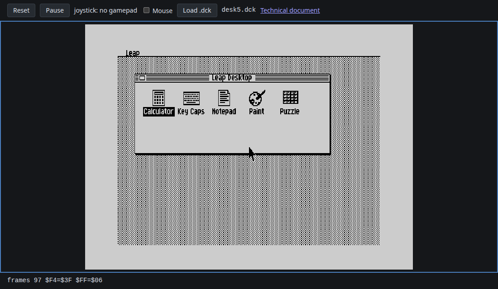
desk5, and starts at the desktop. It cannot open a particular program or file from the address: there are no deep links, so you open programs from inside the desktop (step 5).Click the screen so it gets the keyboard
Click once on the screen. From then on your keys go to the TS2068 (and the sound, if your browser was holding it back, starts too). If you click elsewhere on the page, click the screen again.
Use the mouse
Tick Mouse above the screen, then click the screen: the browser captures your mouse (the desktop draws its own arrow pointer), and the left button is the desktop's button. Press Esc to let go of the mouse again.
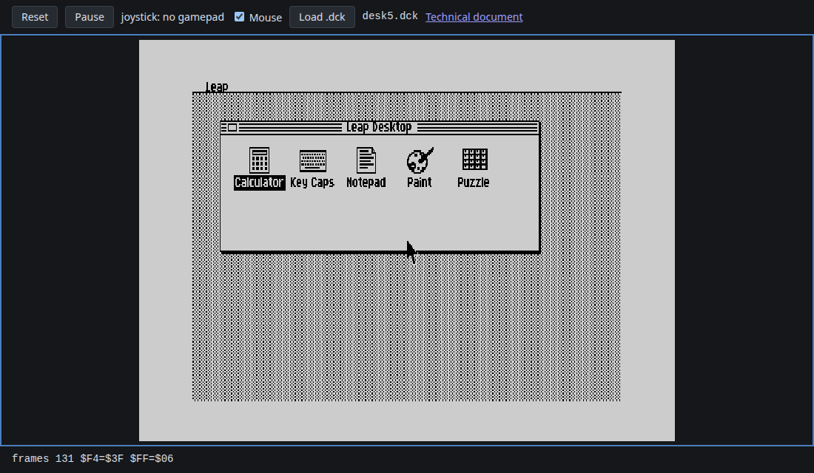
No mouse? Press Shift and Ctrl together (and nothing else) to switch the pointer to the keyboard: Q moves it up, A down, O left, P right, and Space is the button. Press Shift + Ctrl again to switch back.
Windows and menus
- Menus. Press and hold a title in the menu bar, slide to an item and let go on it. The Leap menu lists the programs, Show Desktop and Sound Off / Sound On. Each program brings its own menus.
- Move a window. Press its title bar and drag: an outline follows the pointer and the window lands where you let go. Esc cancels a drag.
- Close a window. Click the small box at the left of its title bar, or press Ctrl+Q. Closing a program's window quits it and brings the desktop back.
- Dialogs take over until you answer: click a button, Enter is the default button, Esc cancels.
- Windows cannot be resized.
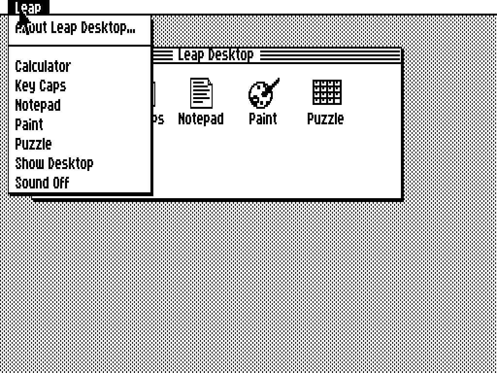
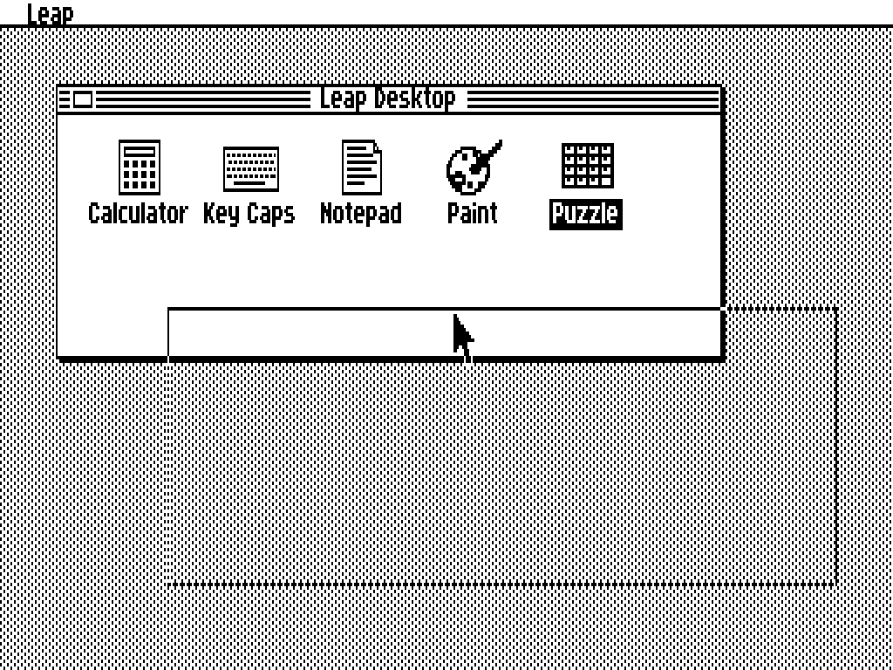
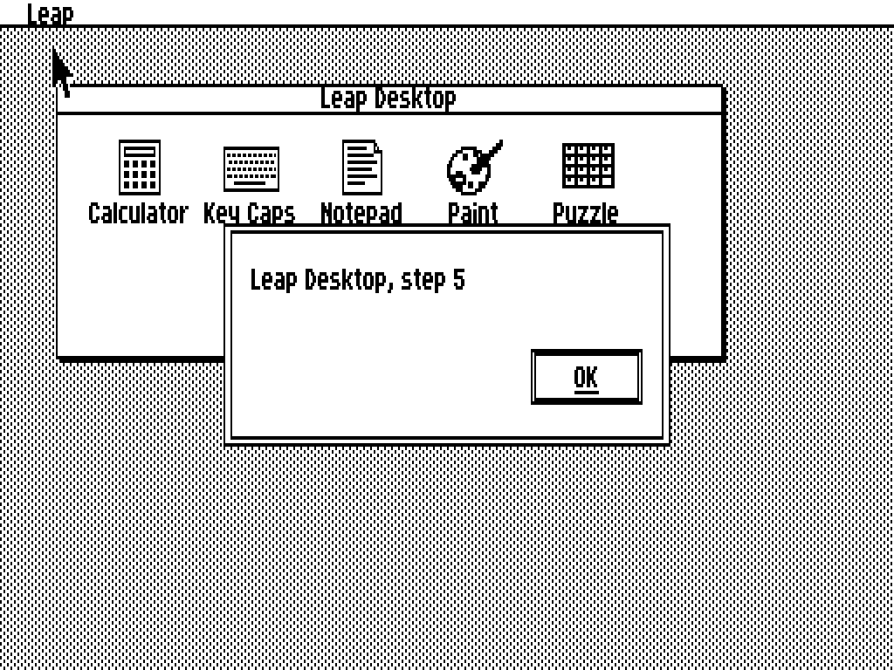
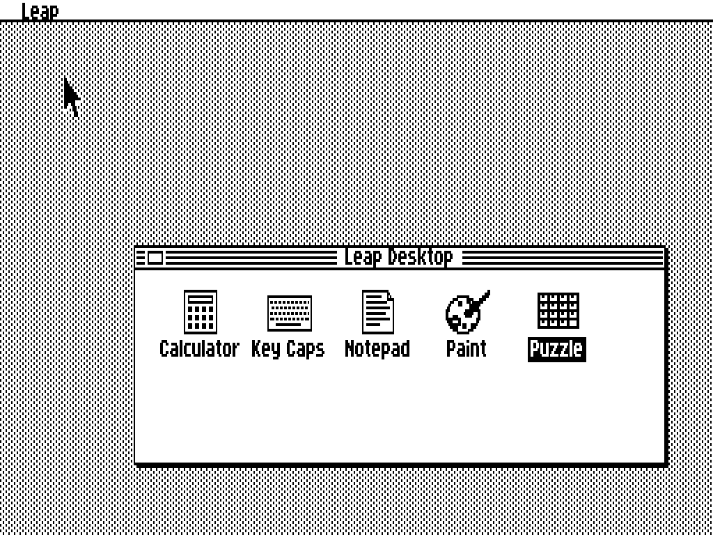
Open a program
Double-click an icon in the Leap Desktop window (a single click only selects it; Enter opens the selected icon), or pick the program from the Leap menu. One program runs at a time; nothing is kept when you leave one.
The keyboard
Your keyboard stands in for the TS2068's, which has two shift keys that matter here. Keys are typed as they are labelled, with these differences:
| On your keyboard | It is on the TS2068 | Use |
|---|---|---|
| Shift | CAPS SHIFT | capital letters; with other keys it makes the editing keys below |
| Ctrl | SYMBOL SHIFT | punctuation and symbols (Ctrl+A is ~); Ctrl+Q closes the front window; Ctrl+E is Notepad's selection mark |
| Backspace | DELETE | delete backwards |
| arrow keys | CAPS SHIFT + 5, 6, 7, 8 | move the caret; in the Puzzle, slide a tile |
| Tab | CAPS SHIFT + 1 (TAB) | move between buttons and fields in a dialog |
| Esc | BREAK | cancel a menu, a drag or a dialog |
| Shift+9 | MENU | open the menu bar from the keyboard (arrows move, Enter chooses) |
The Key Caps program (below) shows exactly what every key types. The browser may keep some Ctrl combinations for itself (for example Ctrl+W). Joysticks are read from a connected gamepad only, never from the keyboard.
Save and open files
The desktop has no disk of its own on this page. Save… in Notepad or Paint asks for a name and then downloads the file through your browser (.txt or .pbm is added if you give no extension). Open… opens your browser's file chooser. Nothing is kept between visits.
The programs
Six programs. Each clip below was recorded from the running desktop by pressing real keys and moving the pointer.
The desktop (shell)
The Leap Desktop window is the launcher: five icons, a Leap menu with the same programs, Show Desktop to bring the window back after closing it, and a switch for the sound (one quiet voice: clicks for buttons, a tone for menu choices and alerts, a jingle when the Puzzle is solved).
The look follows the original Macintosh: a white menu bar, striped title bars with the close box at the left, a grey desk and drop shadows. All the bitmaps were drawn for this project.
Calculator
A pocket calculator with 20 buttons. Click them, or type: digits, ., C for clear and E for clear entry, Backspace for Del. Results show up to 8 digits and 7 decimal places; dividing by zero shows Error.
Try 1 2 × 3 4 =: it shows 408.
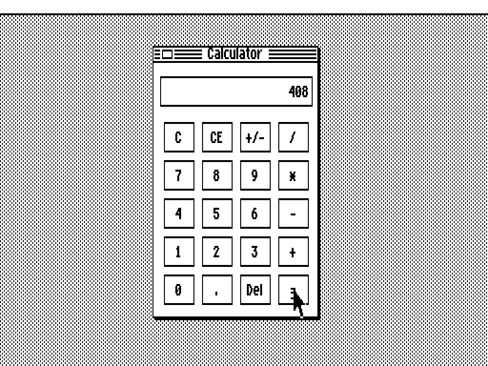
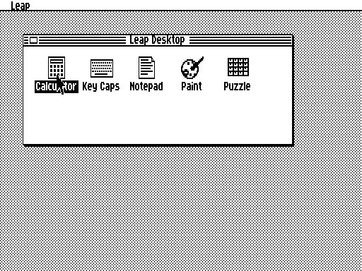
Key Caps
A drawing of the TS2068's keyboard that lights up the key you press, and says what it typed (Last key: h (code 104)). Hold Shift or Ctrl and the legends change to what the key gives with CAPS SHIFT or SYMBOL SHIFT; or choose Plain, Caps Shift or Symbol Shift with the radio buttons to look at a plane without pressing anything.
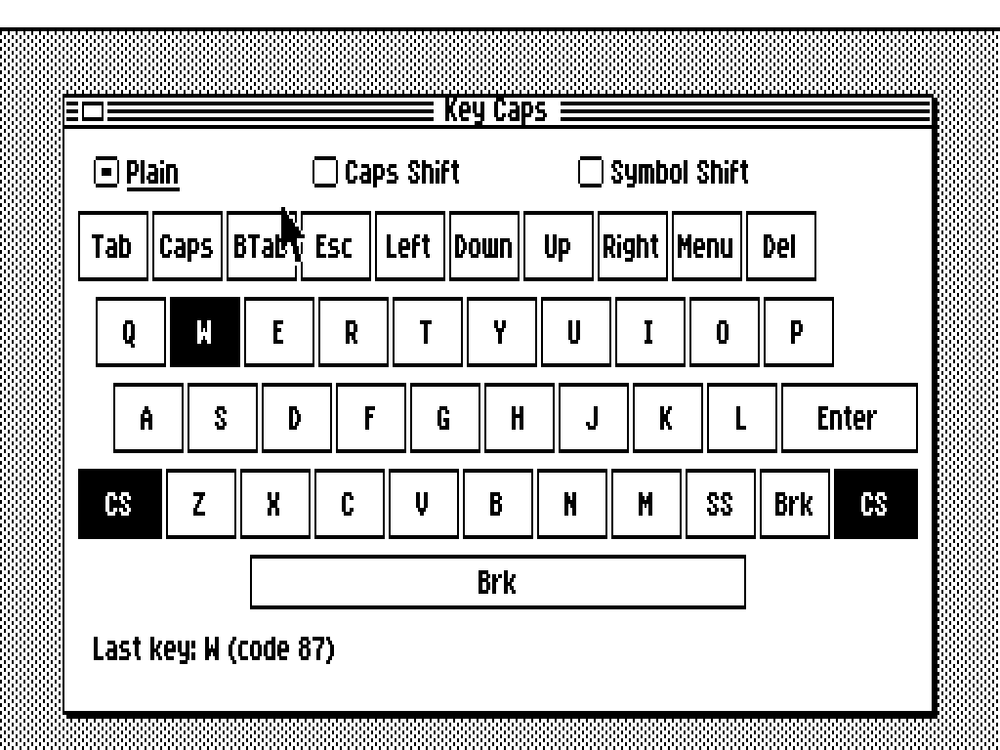
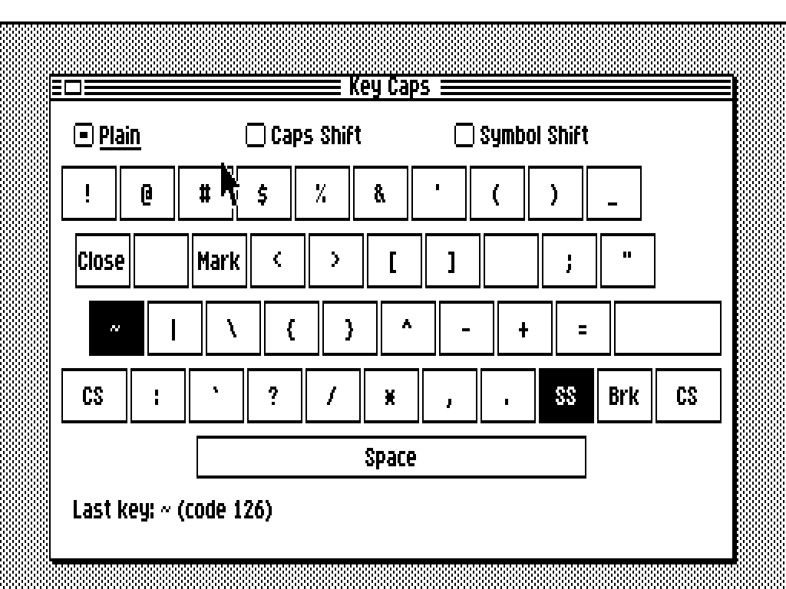
~.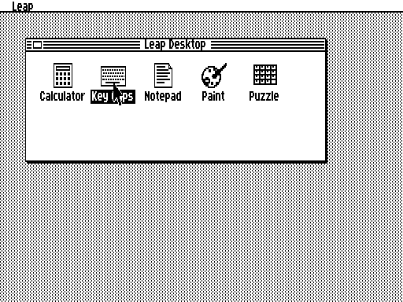
Notepad
A small word-processing window for plain text: word wrap, a proportional font, a scroll bar. Click to place the caret, drag to select, double-click to select a word. Selecting with the keyboard: Ctrl+E turns on Mark, then the arrow keys extend the selection.
- File: New, Open…, Save…
- Edit: Cut, Copy, Paste, Select all, Find…, Find again (case-insensitive, wraps round)
A document holds up to 5,120 characters (plain text, one font). Cut, Copy and Paste have no keyboard shortcuts: use the Edit menu. Save downloads a text file; Open takes a file from your computer.
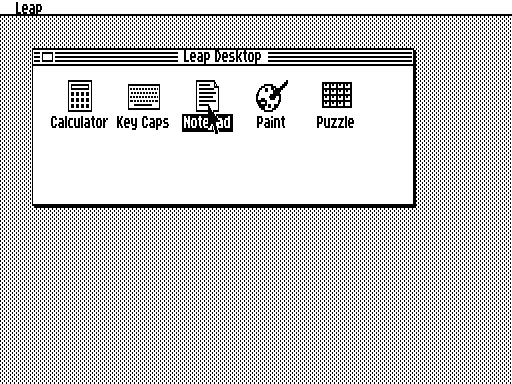
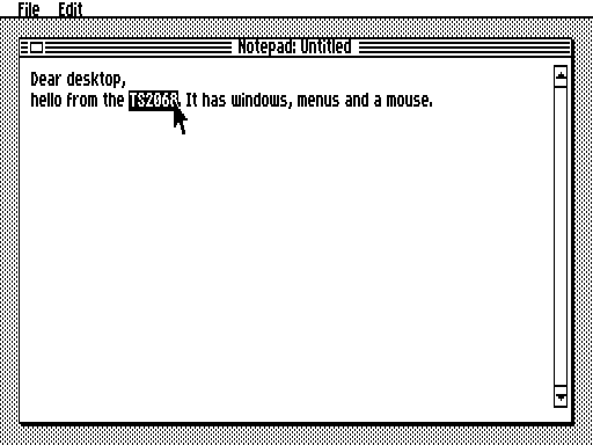
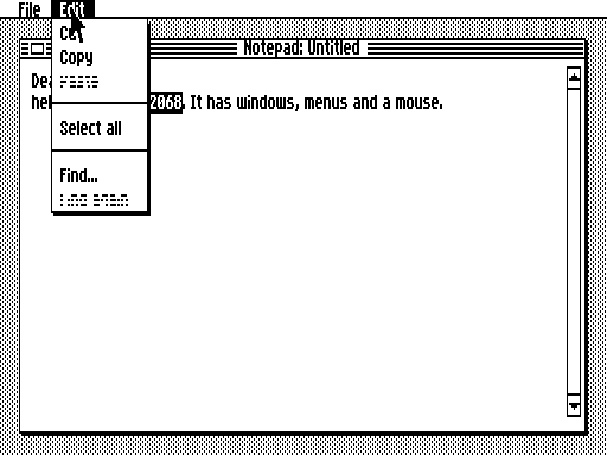
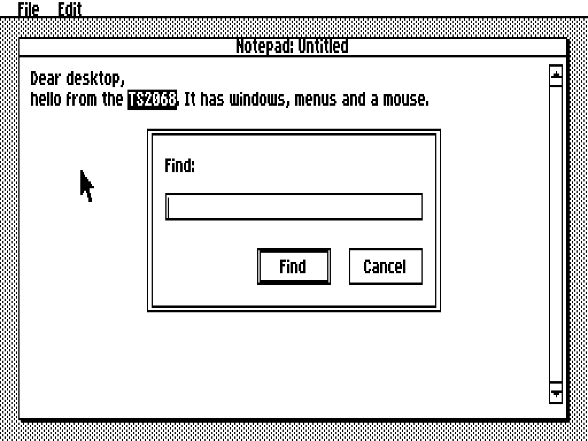
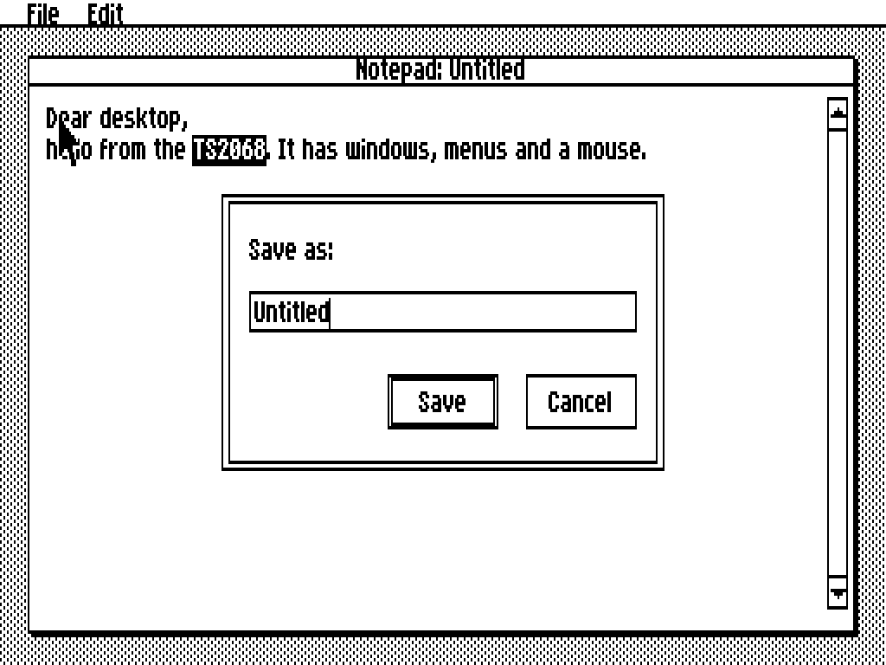
Paint
A black-and-white bitmap painter in the style of MacPaint: a 320 × 144 picture, a tool box, 16 fill patterns and 4 brush shapes. Pick a tool and a pattern by clicking, then draw in the picture.
- Tools: Marquee (select a piece of the picture and move it), Pencil, Brush, Eraser, Spray, Bucket (flood fill), Line, Rectangle, Rounded rectangle, Oval.
- Options ▸ Filled shapes / Hollow shapes: whether the shape tools fill with the chosen pattern.
- Edit: Undo (one level; Undo again redoes) and Clear. File: New, Open…, Save…, Quit.
Save downloads a standard .pbm (P4) image; Open reads a 320 × 144 P4 .pbm and refuses other sizes. There is no zoom yet, and no colour (the desktop is black and white).
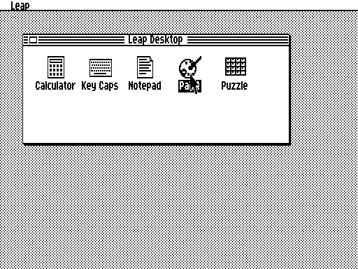
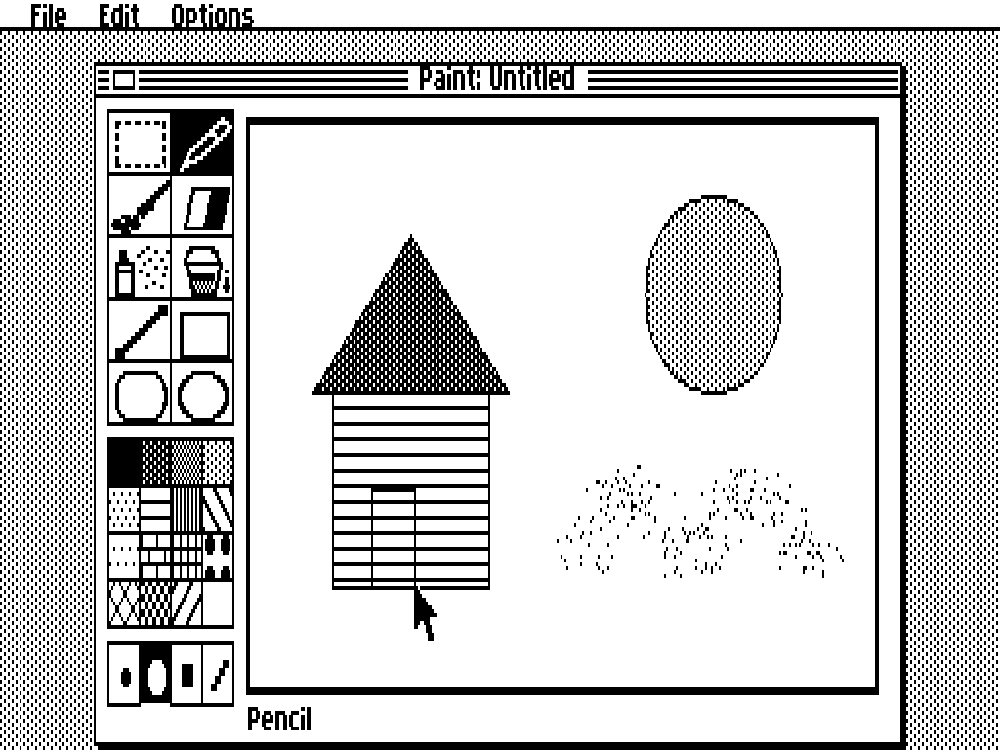
Puzzle
The classic 15-tile sliding puzzle. Click a tile in the same row or column as the gap and it (and the tiles in between) slides along. Or use the arrow keys, which slide the tile on that side of the gap into it. New game (or N) deals a fresh shuffle, always solvable, and the counter shows your moves. When the tiles are in order it says Solved and plays a short jingle.
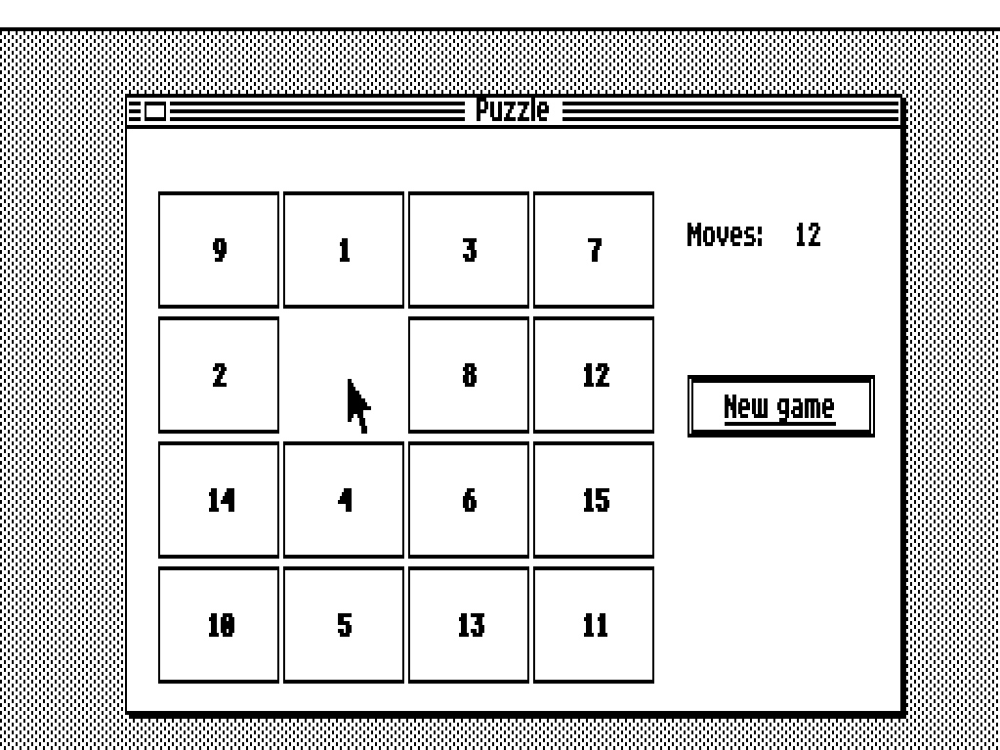
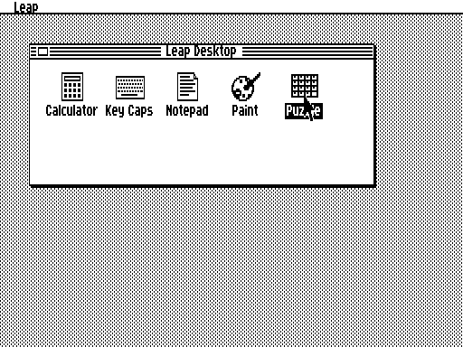
Documentation
The guide above is for using the desktop. The rest is for people who want to see how it is built.
docs/ folder.
Credits and thanks
Leap Desktop stands on other people's work. Thank you.
TSRun, the emulator
The desktop on this page, and every test, run on TSRun, the browser emulator for the Timex Sinclair 2068 written by Josef Jelínek (josef-jelinek). Leap Desktop pins a fork that adds a Kempston mouse and a file bridge to the page; the emulator itself, and the idea of testing a TS2068 program headless under Node, are Josef's. Thank you, Josef.
The Timex Sinclair 2068
The computer itself: the TS2068 by Timex Computer Corporation, descended from the Sinclair ZX Spectrum by Sir Clive Sinclair and Sinclair Research. The page runs the stock TS2068 ROMs that come with TSRun (as its notes say, partly released by Amstrad for non-commercial use and partly abandonware). The hardware reference is the TS2068 Technical Manual, which is not distributed here. Timex, Sinclair and ZX Spectrum are trademarks of their owners; this project is not affiliated with them, or with Amstrad or Apple.
The Leap family
Leap Desktop is built from parts of Leap V2 (the font table and the kernel conventions, MIT) and Leap Arcade and the Leap IDE (the cartridge builder, the fast-boot test helper and the proof of TSRun's silent-AY speed-up). They are the work of nchiker, who set Leap Desktop's goals, made its decisions and approved the results. Each copied file is listed in PROVENANCE.md.
Built with Claude Code
Much of the code, the tests and the documentation were written with Claude Code (Claude, by Anthropic) working under nchiker's direction, with nchiker reviewing, choosing and approving the results. The commits made that way say so in their messages.
Ideas and looks
The look is inspired by the original Macintosh, Paint by MacPaint, and the idea of a desktop on an 8-bit machine by GEOS; all bitmaps here were drawn for this project. zxdesk by Damian Cooper (MIT), a desktop for the 48K Spectrum, was read for ideas (timing method, relocatable programs, interrupt-safe fills); no code was copied. The shape of the file interface follows TS-Pico's channel calls, from the 2068-TSPico-Study.
Tools it is built and tested with
SjASMPlus (1.23.1) assembles the Z80 code; Node.js runs the tests; marked (MIT) renders the technical document. Results were cross-checked in ZEsarUX by César Hernández Baño and Fuse, the Free Unix Spectrum Emulator, by Philip Kendall and its contributors. The pictures on this page were captured with headless Chromium and assembled with Pillow. GitHub Pages hosts the site.
Full list: CREDITS.md. Leap Desktop's own code and documents are under the MIT licence; TSRun and the ROMs keep their own terms.
More from the Leap family
Leap IDE
Write and run programs for the TS2068 in your browser, in Leap V2 BASIC, Leap-Forth or Leap-C, with an editor, an emulator and a debugger.
Leap Arcade
A game-building studio: a structured BASIC with sprite, tile and music editors, to make action games and export a cartridge.